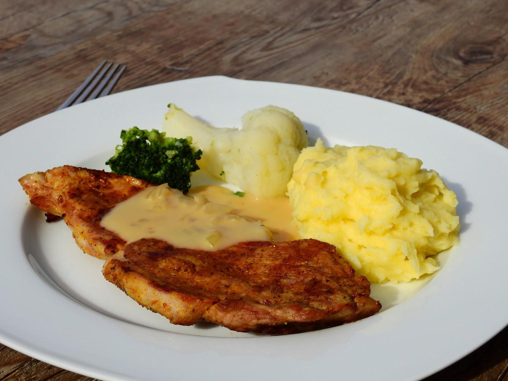

Milanesa con Puré

Descripción
La milanesa con puré es un clásico de la cocina argentina. La carne empanada y frita combina perfectamente con el puré de papas suave y cremoso, creando un plato sabroso y reconfortante que nunca falla.
Ingredientes
- 4 bifes de carne vacuna para milanesa
- 2 huevos
- Pan rallado
- Sal y pimienta al gusto
- Aceite para freír
- 1 kg de papas
- 50 gramos de manteca
- 100 ml de leche
Pasos
- Pelá y cortá las papas en trozos, cocinalas en agua con sal hasta que estén tiernas.
- Escurrí las papas y pisalas con manteca y leche hasta obtener un puré cremoso. Salpimentá y reservá.
- Salpimentá las milanesas.
- Pasá cada bife por huevo batido y luego por pan rallado, cubriendo bien.
- Calentá aceite en una sartén y freí las milanesas hasta que estén doradas por ambos lados.
- Escurrí sobre papel absorbente para sacar el exceso de aceite.
- Serví las milanesas acompañadas del puré.
Home